[SH4] Stories of Struggles in Cutscene Production
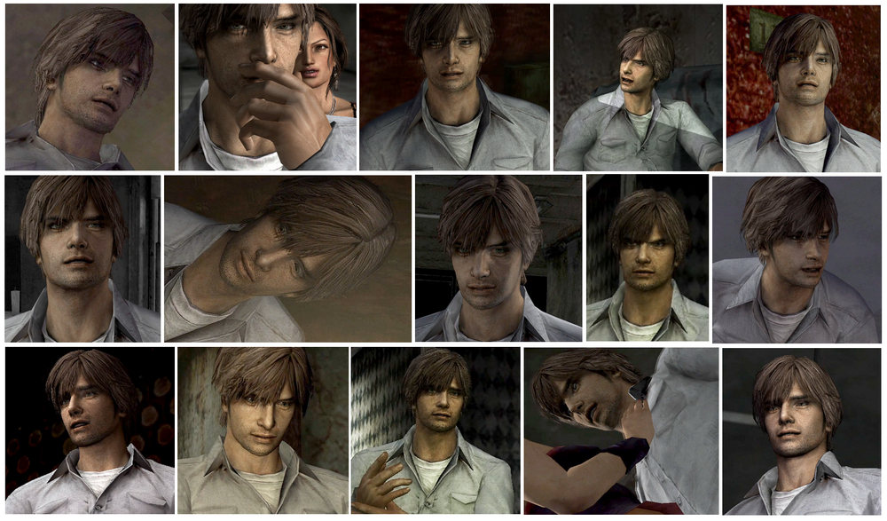
It Helped Create a Unique Sense of Isolation.
This is a mirror of the DeviantArt version linked above, provided as a backup and for easier access.

Last time, we compared the attention to detail in just one second of cutscenes.
So this time, I want to highlight an article by Tsujimoto-san, who worked on the cutscenes (once called demo movies in Japan) .
Please feel free to translate it and give it a read.
🌐制作者の声「第7回:ムービー制作苦労話」デモムービー担当 辻本厚至
From Konami SILENT HILL 4 THE ROOM, Developer's Voice" Vol. 7: "Stories of Struggles in Movie Production" Demo Movie: Atsushi Tsujimoto
https://web.archive.org/web/20071207104637/http://www.konami.jp/gs/game/sh4/07roomq.html
✅ Quote: The most difficult aspect of this project—and almost every part were a constant struggle—was producing the video using real-time rendering.
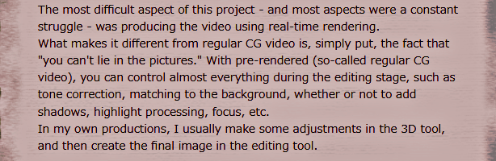
This game uses real-time rendering because revealing costumes can be unlocked and the cutscenes change depending on the degree of possession. Tsujimoto-san says about exactly these challenges in the article. I really think it's amazing that they were able to do this back in the PS2 era.
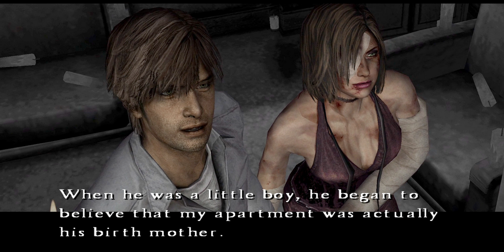
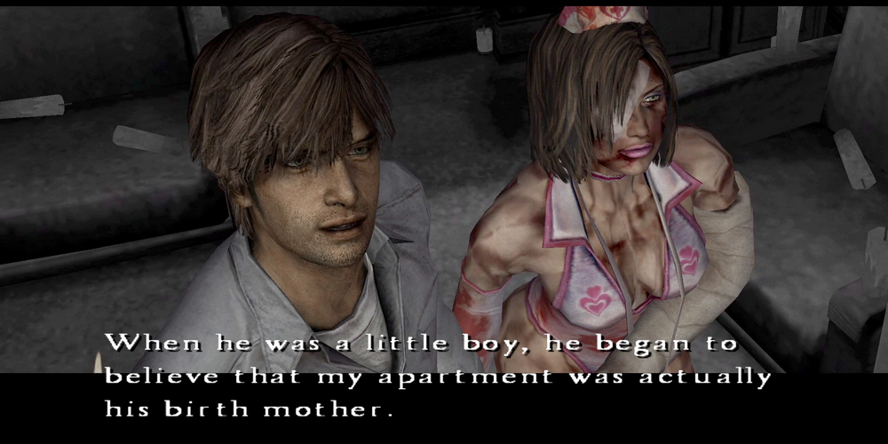
Regarding the bouquet texture, I once received a comment, "I thought it was pre rendered," that actually got me thinking again about why the endings were also in real-time, even though the costumes don't change in those scenes.
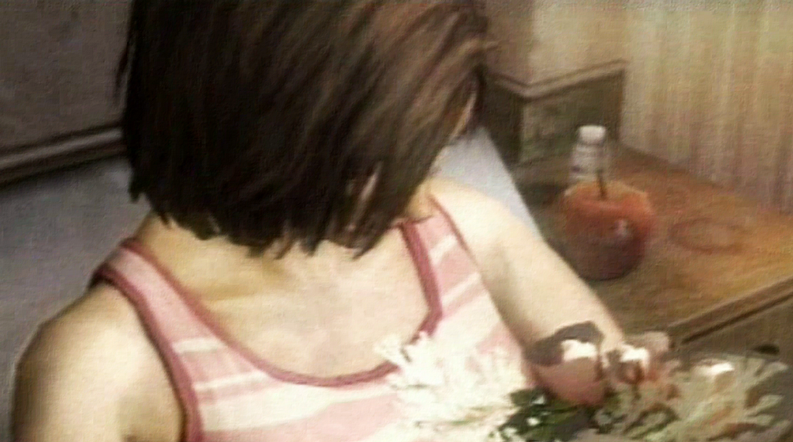
There is also a texture for the hospital room in the game data. (File name: ed00.bin)
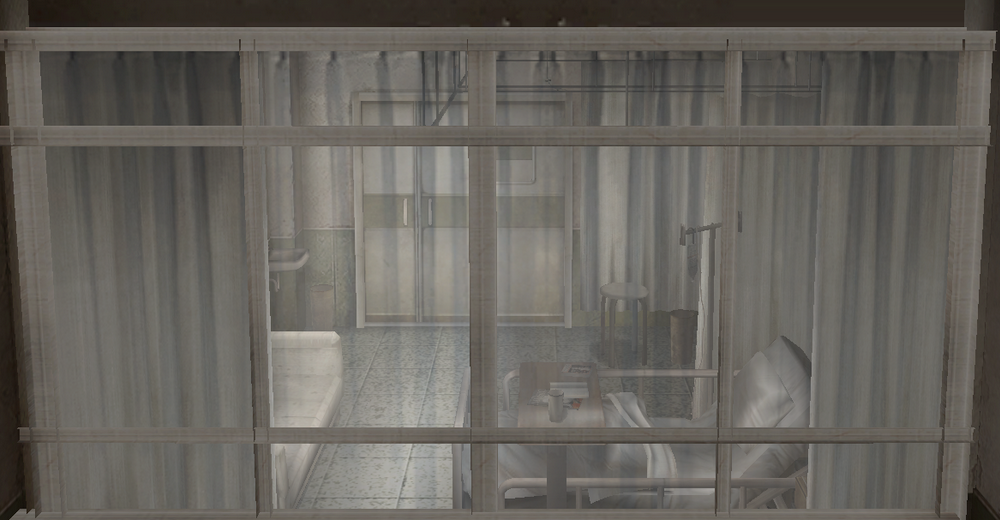
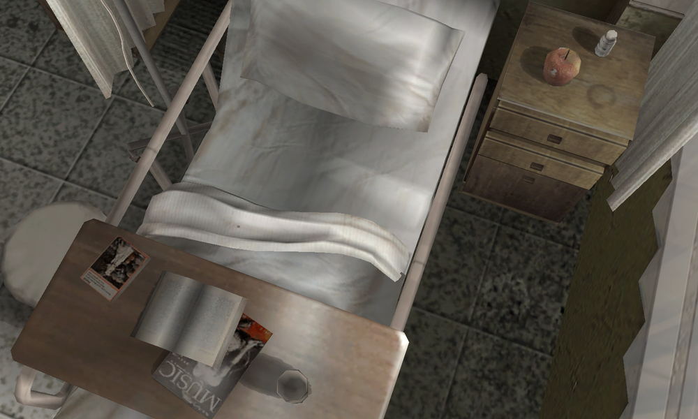
Many people have analyzed angles that aren't visible in the cutscenes and have confirmed that the book on the table is the same one from SH3.
By the way, speaking of the Silent Hill series as a whole, it was starting from SH3 that the in-game cutscenes shifted to real-time rendering.
✅ Quote: As those who have played the game will know, the main character, Henry, doesn't talk much. This is because the project's concept was that the player is the protagonist, so we wanted to avoid expressing any visible emotions as much as possible. We had a lot of trouble with this direction, but I believe it helped create a unique sense of isolation.
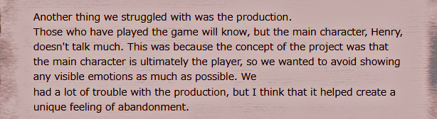
It's also interesting that he mentions Henry. In fact, even on the old official website and in the official guides, there's very little information about him. That's why this page even has the most lines about him...
But despite what he says, there are many emotional expressions in the cutscenes. Henry looks distressed as if he's about to cry, happy, angry, and everything in between. He even expresses his emotions through hand movements. If this is them holding back on showing Henry's facial expressions, I sometimes wonder what would've happened if they hadn't.
Well, I know during gameplay he says almost nothing at all lol, to the point where I find myself thinking, "Talk!" or "Eileen's the one doing the talking, so at least give some response." Haha.
✅ Quote: After the motion capture recording was finished and the demo data was complete, we were excited to start the project, but that was when major revisions were made to the main character. These revisions included not only cosmetic changes but also changes to the underlying structure of the animation.
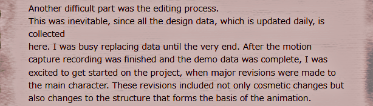
Finally, he talks about the hard work involved in remaking the cutscenes and motions. It's no exaggeration to say that thanks to all this effort, the "everyone's beloved characters" are here today, and I'm genuinely grateful!
-
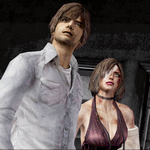
[SH4] Awkward Character Prototypes?!
The "Contradictions" in the Official Interview Weren't Contradictions After All. And Huge Thanks!
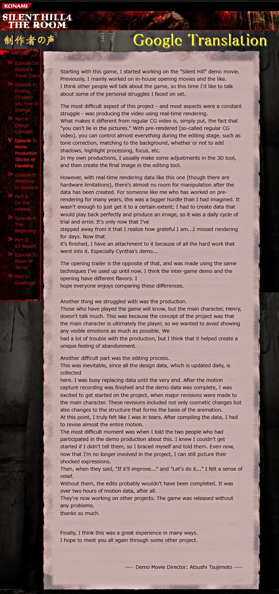